<textarea>


<header class="header">
<h1>Online Menus and Human Choicemaking</h1>
<h2>i.e., Why are we all wasting time on the internet?</h2>
<h3><b>Joe Edelman</b> July 2014. DRAFT</h3>
</header>

<!-- Navigation Interfaces and Human Decision-making -->
<!-- Browsers, Device OSes, &amp; Online Stores that Let Us Live Well -->

## Abstract

<p id="abstract">
*Considering the information requirements of choosing, current on-device menus are found to be inadequate, untrustworthy, isolating, and biased toward regrettable choices.  To address this, I'll suggest principles for the redesign of browers, app stores, recommenders, notifications, and other menu systems, as well as a public data repository about the outcomes of various choices.  Finally, I'll discuss potential impacts on the media ecosystem and on incentives for business.*
</div>


## Contents

*[Our situation](#situation)*

* **[Untrustworthy Technology](#device-responsibility)**
  *Our tricky devices & their responsibilty.*

Human choicemaking

* **[Evaluating Choices](#life-in-review)**
   *Shitty Menus, Regretted Choices: Uninformed choices & life in review.*
* **[Information and Choice](#addiction)**
  *Even addiction responds to information.*
* **[Expressivity of Choices](#expressive-choice)**
  *We construct our values by choosing.*

*[Repairing individual choicemaking](#repair)*

* **[Revealed Promises](#promises)**
  *...*
* **[Promise Neighborhoods](#neighborhoods)**
  *...*
* **[Allegiances](#allegiances)**
  *...*
* **[Inviters](#inviters)**
  *...*


*[Beyond individual choicemaking](#beyond)*

* **[Social Choices](#social-choice)**
  *We construct our family by choosing.*
* **[Collective Wisdom](#collective-wisdom)**
  *Public data, satisfying choices, & lives well lived.*
* **[Best-Outcome Economies](#outcome-economy)**
  *Consequences for business and society.*

<a name="situation"></a>
## Our Situation  *In which we examine what the device's responsibility to its users might be, and how it is doing in that department.*

<a name="device-responsibility"></a>
### Untrustworthy Technology

If doctors have responsibilities to their patients--to help them make informed choices, to present infrormation in an unbiased way, and to act in their best interests rather than exploiting them--might we say that our computing devices (and the companies that produce them) have a similar set of responsibilities to us?

Here we'll focus on one such responsibility--the responsibility not to present biased information that will lead us astray.

We have names for business that mislead us about benefits or about costs, but we aren't as articulate yet when talking about hidden costs, unfair manipulation, and false promises on our phones.

We call a business *dishonest* when costs are higher that we were informed--e.g., when a sketchy bank charges unexpected fees.  But the unexpected *time costs* of the internet are a tax we pay every day.  What if time costs were estimated for everything, like they are on medium.com?

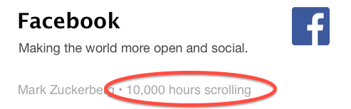

If a salesman misleads us about the promise of a product, we call him a *charlatan* or a *quack*.  But when an app store indicates a fitness app or a dating app may help us--without providing information about other options and how they all work out for people, it's harder to point a finger.

Menus should serve users.  At the platform level, devices should give us options aligned with our own interests--rather than in the interests of increasing engagement metrics for media companies, and should present those options in a way that lets us choose well.  Below I'll try to show that this requires giving us informed, expressive, and social choices.


<!--
(( HCI, Linklidder, Victor, Kay, etc? ))
-->


## Human choicemaking *In which I discuss value-neutral ways of distinguishing "good" and "bad" choices, the profound ways that information affects certain kinds of choice, and how personal values and choices interact.*

<!-- In which I discuss the kinds of choices we want to make, and consider the information requirements of such choices. -->


<a name='life-in-review'></a>
### Shitty Menus, Regretted Choices

> *"There are goals other than well-being, and values other than goals"* - Amartya
Sen:, 1984

What does it means for a device to let us "choose well"--or inversely, what it means for a device to "trick" us into a bad choice?  The definition I'll use here is that, if a device leads us, through missing information, to do something we regret, then it has tricked us and prevented us from choosing well. &#10033;<span class="sidenote">&#10033; A full explanation of why "I-Wish-I-Had-Known Regret" (IWIHKR) is a good foundation for defining good and bad choices is beyond our scope here.  But consider that, in choosing a metric around which to characterise choices, we would want one that: (a) accommodates many value systems across different users, (b) aligns with user intuitions about what's good, and (c) aligns with human needs.  An inferior metric like "maximal moment-to-moment happiness" fails all of these:  some people don't value happiness, many things widely regarded to be good like grad school and childbirth are not about happiness, and there are ways to be happy that don't align well with human needs.  Furthermore: (d) IWIHKR is clearly and quickly evaluable via user reports, (e) that evaluation once made is durable over time, and (f) minimizing IWIHKR correlates well with existing metrics, including maximizing brand trust and net promoter, maximizing positive user sentiment, and minimizing burnout.</span>

When I focus on regret, I mean not the emotion of regret, but any kind of negative retrospective review.  I.e., we would like our devices to help us live well according to our own judgement.  When there is information that would help us in this endeavor, we would like our devices to surface it promptly and at the moment of choice.

It is important, then, to clarify the types of information that might avert a regrettable choice--especially the most common regrettable choices.  This will include information such as likely time costs, likely money costs, the unlikelihood of various hoped-for outcomes, the likelihood of unhoped-for outcomes, whether there are less-costly or better-success-rate options for similar outcomes, and even whether our hopes themselves are likely to change.

Below I'll take on the challenge of designing menus for browsers, app stores, etc, that convey this information.


<!--
Consider how biased the information they give us is:  when you receive a notification, you'll generally see additional information next to it.  You'll see whatever information would make you want to click, but you're never shown the information that would give you pause, or would help us prioritize.
-->


<a name='addiction'></a>
### Information and Choice

The next thing to address is the degree to which the information surfaced in menus affects choicemaking.

Does information really help us make different choices?  Perhaps we're just very conflicted about what they want, and we want something one minute but then regret it the next? Or, what about addiction--isn't addiction an impairment of the mechanism of choice itself?

Economists have been studying so-called "bad" choices for decades, including the behavior of addicts.  Here are three common ways of understanding bad / addictive choices:

* as a kind of impairment of the ability to choose  ("OMG I just spent 4 hours on facebook."),
* as a rational choice made with a misunderstanding  ("I thought I could spend just a few minutes!" or "I thought it'd make me popular and happy!"), or
* as a rational choice made in a bad situation ("Life sucks lets get high and watch cat videos.").

Popular thinking leans on the first explanation, but economists have focused on the other two, because of [a landmark paper by Becker and Murphy](http://www.jstor.org/discover/10.2307/1830469?uid=3737864&uid=2&uid=4&sid=21104100113327) which found that cigarette smoking and heroin use are sensitive both to announcements of future tax levels and to independent improvements in life circumstances.  That is, people do stop doing heroin when they suddenly have an unexpected chance to go to college, and they can stop smoking if they figure out it's going to be more expensive than they thought.  I.e., if they recalculate the direct costs or opportunity costs.

This suggests that a regrettable choice is not a character defect, a failure to choose, or a weird preference, but a lack of options at hand.  In other words, a lack of options with low search costs. And that means it's less important to provide "speedbumps" or to otherwise deprive the addict of their drug, and more important to provide better situations for people and better opportunities at the moment of choice.

Let's use the term *desperate choices* to refer to regrettable choices that were made because the alternatives were too hard to search for.  The donut bought because you didn't know where to get good food.  A visit to facebook to take a break because there wasn't a meditation teacher nearby.  This is I-Wish-I-Had-Known Regret.  The activities that we regret are the ones where we know (at least later) that we could have done better by ourselves, but the search itself seemed exhausting.


<a name='expressive-choice'></a>
### Expressive Choices

<!-- add
(( ted talk lady, r marie cox ))
((- map of goals, profile box -))
-->

> *In which we discuss methods for turning the distracting choices which often lead to regret and user burnout into expressive, meaningful choices which relate to values and outcomes that are important to us.*

People tend to choose from what's in front of them.  This means that whomever designs the menus is very powerful, because people will make a lot of choices based on the information on the menu, and rarely consider options that aren't on the menu in front of them.

To the extent that our identities are shaped by the choices we make, the person who designs the menu can shape our identity.  This is not the domain of a responsible/trustworthy device.  A trustworthy device must let us shape our own identity, which means that our menus need to be malleable based on what's important to us.

There is another kind of "I wish-i-had-known regret"... that concerns our values.

**If users are to feel good in the long run, they need to be able to organize *what's in front of them* in terms of *what matters to them.**

Choices are an opportunity to examine our values and come up with new reasons.

The full job of a menu is to surface information to help us make decisions we won't regret, and to let us navigate according to what's important to us


<a name="repair"></a>
## Redesigns

<a name='promises'></a>
### Revealed Promises  *In which....*

Much of the information we suggested earlier might be necessary-- likely time costs, likely money costs, the unlikelihood of various hoped-for outcomes, the likelihood of unhoped-for outcomes, whether there are less-costly or better-success-rate options for similar outcomes, and even whether our hopes themselves are likely to change--concerns the hopes of the user.

In order to understand what information will minimize regret, we need to understand what we are hoping for when we click on an option--i.e., when we decide to **engage with a resource** (go to an event, to use an app, buy a thing, follow a link, etc).

A design approach is to give each such hope a name and some screen real estate.  If we take it as given that we choose to engage with a resource because we are taken with its **promise** (perhaps an **outcome** we hope will result from the engagement or a **value** embodied in the choice itself) and are willing to pay the **assumed costs**--then perhaps we can display that promise on screen, along with how well it works out for people.

Here is an example for gmail.com.

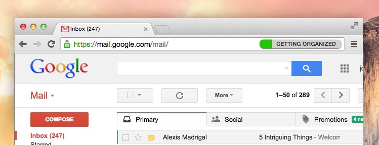

Surprisingly often, these are false promises.  Facebook tells us it will be quick break, Sports Authority tells us we will get fit.  When we can make promises explicit, it may be that **false promises are no longer something we have to put up with.**


<!--
(( branding and credence papers, max neef, coming insurrection, society of the spectacle ))
-->

#### Browsing

> *"The thing I hate the most about advertising is that it attracts all the bright, creative and ambitious young people, leaving us mainly with the slow and self-obsessed to become our artists."* -- Banksy

Below I'll present modifications to a web browsing interface that makes promises explicit and indicates whether the outcomes we hope for are likely as we browse.

Most of us have visited facebook.com at some point during work when we needed a break. We type 'f' into the box at the top of your window and it autocompletes and then you are browsing facebook.

This choice--the choice to type 'f' in the box--is made in states of exhaustion, absent-mindedness, or procrastination.  We don't want to think very hard about what to do in this moment.

It is often difficult to figure out best options for ourselves, even if we think abstractly that they may exist.  Facebook may seem like a good way to take a break from work, even though a walk around the block would suit us better.  But we often lack the time or the energy to compare options.

**In today's browsers, this choice is made without any explicit representation of what I want or of how much time I want to spend.  I'm trying to relax, to take a break, and maybe I'm imagining it will take 5 minutes.  But there is no where on the screen that the word "break" or "relax" appears or "5 minutes".  It's almost as if the interface wants me to forget my motivating desires as quickly as possible.**

A more user-aligned browser would make this explicit.  For instance, with an extra tag in the URL bar to capture what the use of the site is about.


Once I start navigating, it recognizes there may be different reasons I would want to go to facebook right now.

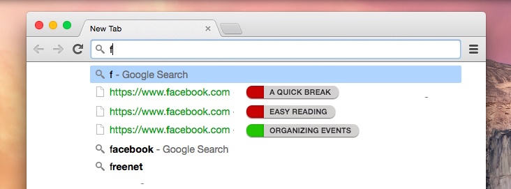

I can see how well these different uses of facebook have worked out for people.  And I can see--maybe for the first time--if there's something that might be a better way to feel relaxed.

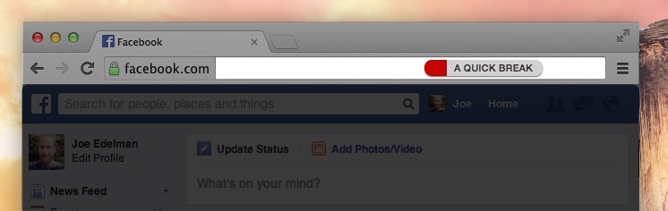

I can see it right here on my screen and get help with that.  Clicking or hovering could reveal hints as to what other engagements might work better.

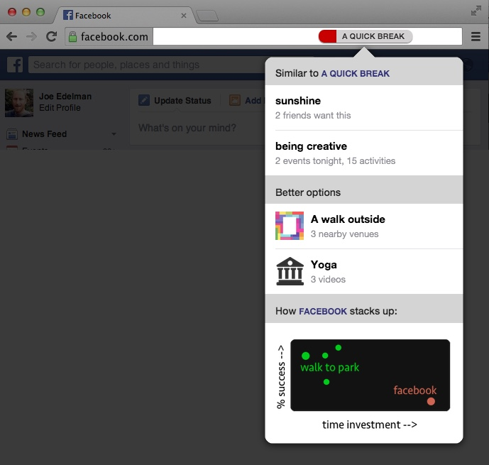


#### Shopping

Of course the same can work for physical goods:

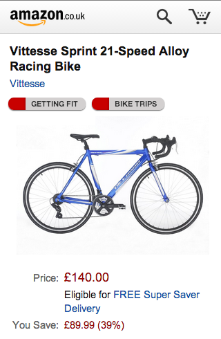


#### Recommenders

Of course, we don't do very much of our choosing in the navbar.  Algorithms like like Facebook Newsfeed and Google Now structure more of our discretionary time.  And these are even more important to align with our true interests.

We can look at reorganizing device home screens, new groupings in recommendation and discovery interfaces like Google Now, and changing how apps address users, by switching from plain text notifications to value- and outcome-tagged suggestions.

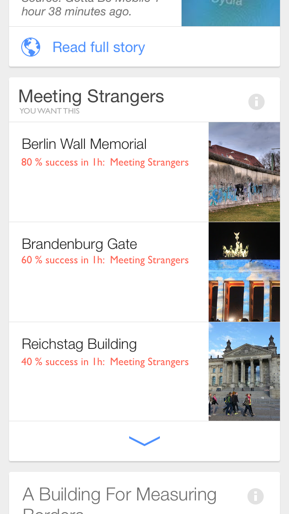

Our goal is to provide data at the moment when important life choices are made, including discovery, purchasing, calendaring, and browsing choices.


#### The space of promises

Our everyday hopes, as we buy things, download apps, book appointments, etc--may be of a small enough number that they can be indexed, tracked, intelligently guessed and autofilled, and clearly named. While human pursuits in general are of infinite variety, we can make a good start by tracking, say, terms related to ideal schedules (e.g. "frequent exercise"), ideal personal states (e.g. "getting hitched"), and ideal tactics (e.g., "acting boldly").  Each of these is a small enough set.

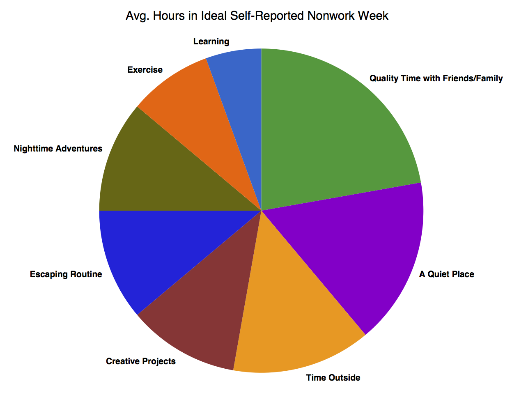


#### Prior art

The closest thing to a standard for conveying benefits are the [highlighted phrases](http://en.wikipedia.org/wiki/Collocation) pulled out of reviews by Yelp, Amazon, and Google.

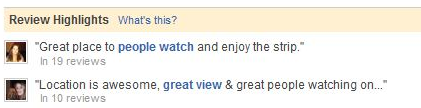

The phrases capture *features* of a product or service, like "great view" and "mozarella sticks", but they don't capture our actual hopes, which are both more general and more specific--things like "quality time with friends", "an adventurous weekend", "feeling refreshed", "getting fit", or "learning to knit".


<a name="neighborhoods"></a>
## Promise neighborhoods


How do people change their activities as they learn about what's possible or what satisfies them?  When the same user reviews different engagements for a set of desired outcomes, we can answer important questions. In the map below, an arrow is drawn when reviewers tend to migrate from one activity to another activity, and the latter activity is reported to satisfy their desires more effectively, so they stick with it.


Many such maps are possible, creating an opportunity for data visualizers and storytellers [to map our collective wisdom](/OpenOutcomes/). What do people that want to "be successful" or "get fit" tend to want 6 months or a year later?  Which desires are the most durable--are you making a big choice based on fleeting interests?  What works best for getting fit--apps, gyms, trainers, fitness buddies, or equipment?  What have people tried first and then given up on?


<a name="beyond"></a>
## Beyond individual choicemaking


<a name='social-choice'></a>
### Social Choices

> *Isolation underpins technology, and technology isolates in its turn; all goods proposed by the spectacular system, from cars to televisions, also serve as weapons for that system as it strives to reinforce the isolation of "the lonely crowd."* -- Guy Debord


It appears as though we might decide “I’m going to this event” or “I like this video.”

The playground reveals that our choices are usually provisional, invitational, or suggestive, rather than truly personal. Our choices are actually of the form “I will if you will” or “why don’t we” or “here is an example” or “I’ll join you in” or “this I believe in.”

To choose an activity on the playground is to lead a friend, or to hope for a friend, or to invite a stranger with your mere presence, or perhaps even just to enter into a reverie with some equipment or the landscape. The act of rapport and the act of choice cannot be other than simultaneous and it is a conceit unique to consumerism and our tech landscape that we make choices without realizing each choice is as much a planning of others’ lives as of our own.

On some days we may play with the authors of books or the shapers of landscapes now far away, we very rarely play alone, and even the act of sitting quietly with a book in a public space is an act of leadership or following. The playground lays this bare.


<a name='collective-wisdom'></a>
### Collective wisdom

**In which we describe how public data about people, choices, and outcomes can address search costs problems like addiction.**

> *Computers, video, radio, printing presses, synthesizers, fax machines, tape recorders, photocopiers — these things make great toys, but terrible addictions. Finally we realize that we cannot "reach out and touch someone" who is not present in the flesh.* -- Hakim Bey

<!--
(( postman, other info econ, especially the other becker paper ))
((- google now and siri, profile page, other OLL pages -))
-->


When data scientists base their calculations on likes/clicks/views/purchases/download stats, they're sampling the impulsive, lost moments in people's days. No wonder the crowd itself seems lost, when that's the data collected. Our collective impulses reach out towards whatever's placed in front of us. Virality, therefore, is a symptom of measuring and publishing inaccurate, partial data about people.

The data we've been talking about--about resources, about which we are glad we engaged with and which we regret, about values, and about changing values--this is retrospective, thoughtful data.  It samples a kind of collective wisdom, rather than viral impulse.

As we covered in section 3 and 4, desperate and uninformed choices are a function of the options at hand.  Thus, when we think about improving lives or ending addictions, it makes sense to think in terms of providing better opportunities at the moment of choice.

In other words, the metrics we use to give options to people need to surface wisdom, not impulse.  We would expect that metrics like viewers/views/clicks will mean more regretted hours, and metrics like five star review count and outcomes going well will mean more lives well lived.

If 60% of people regret visiting youtube on a tuesday night, you should know that before you click a suggested video.

#### Collecting data against promises

Some companies are explicit about promises..


The products above--Yelp, DIY, Meetup--are especially aligned with user wellbeing.  Only when there are plausible-sounding outcomes can a company advertise them explicitly, which is why cigarette and beer commercials have to be so oblique.  But even companies like Yelp or Meetup do not attempt to provide information about how efficiently or often the use of their product addresses our desires.  Plainly, what is the probability of reaching each benefit by using the product for a given investment of time?

Indeed, it's not clear if anyone knows the overall likelihood of getting fit by joining a running meetup, or finding a life partner by investing 40 hours in a dating app.  Do these things work out?  What kind of investment is required for what kind of payoff?  How do the alternatives compare?  The data will likely be fuzzy, different for different demographics perhaps, but why not collect it and see?


#### How do we collect this data?

Acquiring data about which product and choices product which outcomes is our next challenge.  This job is not unlike what product reviews are supposed to do.


The venerable five-star review--while it guides us better than popularity and virality metrics--doesn't ask about outcomes.  A product like Angry Birds can receive excellent reviews and still be a regretted engagement for many users.  Besides unexpected time costs, someone might have downloaded angry birds to take a relaxing break from work, then later found that they weren't relaxed, or that there was an option that worked better for them for work breaks.  We need a review that will capture all of this.

The task is to remind reviewers of the costs involved in the engagement (time and money, ideally as authenticated via the service provider or the platform), then to give them a quick and articulate way to report what the engagement was *about*, how their desired outcomes have worked out so far, and what else has happened.  Occasionally, they'll need to be explain that an engagement was about something new--an outcome not in our database.

Here's a first attempt at such a retrospective review:

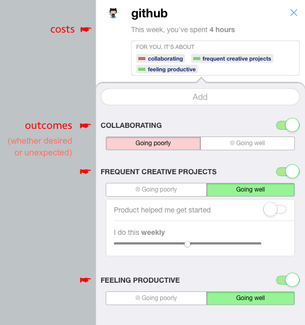

It won't take millions of reviews.  But to provide meaningful signals across all the top apps and web products, we will need an articulate, representative, and thoughtful set of reviewers.  Like the Nielsen families we for TV, but collecting a greater range of engagements, and capturing what each of them was about.

If we were to collect a small number (say [50,000](/OpenOutcomes/)) of these reviews, we might have a significant public resource.

<div class="sidenote">
Collective wisdom about outcomes may eventually be a distributed, internet-level concern, below the content and application layers.
</div>

A community resource to answer these questions quantitatively would be consequential.  As a data API, it'd be a google maps or OpenStreetMap for life decisions--augmenting all manner of shopping, browsing, and list experiences, allowing users to sort by likely outcomes, relevancy to their own desires for personal growth or scheduling, etc.

Such an API could be used for everything from sourcing and sorting suggestions for friend get-togethers:

<div class="sidenote">
This interface was tested with a few thousand users as part of a defunct startup. The results suggested that user behavior can change significantly when recommendations are ordered by desired outcome and ranked by reported likelihood of an outcome working out.
</div>


To labeling and filtering the entries in Facebook Newsfeed that are relevant to your short-term desires.

To calendaring

<div class="sidenote">
Two Lives Left -- a calendar app for visualizing your life and adding exercise, friend dates, and whatever makes you happy, and with a web of new activities (not just events!) to add to your calendar. https://itunes.apple.com/us/app/sand-calendar-day-planner/id687579461
</div>


While such a data API could be popular, so would a rendering of the data as a destination and community site. It'd be like Wikipedia [or Quora](http://www.quora.com/Life-Lessons/What-is-the-one-thing-that-people-wish-they-had-known-about-life-when-you-were-in-your-20s-d-2), but focused on life choices made, what they were about for the individuals involved, and how it all worked out.  Visitors could review choices about downloading/using apps, websites, products, etc--but they could also review larger engagements, like moving to a new city, going freelance, etc.


<a name='outcome-economy'></a>
### Best-Outcome Economies

> "we shall once more value ends above means and prefer the good to the useful. We shall honor those who can teach us how to pluck the hour and the day virtuously and well." -- John Maynard Keynes


<!--
(( folbre, story of stuff ))
((- report for facebook, leaderboard, consumer spending, hours desired -))
((* pull from hackpad shared with jordan and jim, and ACE omnigraffle *))
-->

> *In which we locate these models of informed choice, expressive choice, and collective wisdom in terms of the microeconomics of addiction, behavioral economics, and current social issues like obesity, depression, a lack of meaningful work, sexual dysfunction, clickhole media / the buzzfeedification of media, and "internet addiction"*

The epidemics currently facing the modernized countries—obesity, social isolation, depression, a lack of meaningful work, etc—indicate that our true interests as the “users” of the economy are disturbingly misaligned with the interests of industry and marketing, which focus on clicks, views, downloads, and sales, rather than on our long-term desired outcomes.

A concise way of saying that is that our organizations--and in particular our big companies--are not outcome-aligned.  Organizations in an economy can be said to be *outcome-aligned* if they have no economic interest besides positive outcomes for their users.

If users can make outcome aligned choices and consider values as they navigate, we approach a situation where both traffic and sales are aligned with users' long-term satisfaction and the likelihood of good reports of outcomes.  This can be tremendously beneficial for society.

To realign our society will require both (a) detecting when and how best our true interests can be satisfied, and (b) changing incentives for businesses and organizations to match reports of long-term satisfaction.  It may be that better menus on our smartphones will accomplish both, by redirecting demand to the best choices.  But even if better menus are insufficient to change demand, we can be sure that retrospective reviews will provide a better measurement than do clicks, views, etc, of what was in our true interests and what was not.  We can then decide as a society how to disincent businesses which leading us into activities we regret and report high costs and bad outcomes.

And work ultimately towards switching from marketplaces that are mostly about transactions to marketplaces for personal outcomes; directing attention and cashflow towards better providers and sites--i.e., those which produce the best outcomes, best likelihoods, and lowest costs in users' lives, rather than those with viral loops, network effects, marketing deals, or other advantages.

#### Verifying outcomes

* add channel partner stuff


## Conclusion

In 1930, economist John Maynard Keynes claimed that the sales metrics that drive capitalism would at some point start driving us in the wrong direction.  He writes that our society would have a collective "nervous breakdown" unless:


Let's follow Keynes' advice.  Can we measure demand with the question &ldquo;what are you glad that you bought?&rdquo; instead of &ldquo;what did you buy?&rdquo;, or online, with &ldquo;what are you glad you clicked?&rdquo; rather than &ldquo;what did you click?&rdquo;  Can we tether the lifeblood of our economy--cashflow, attention, and resources--to reports of informed and fulfilled lives?  Would people then work together to create the best outcomes for one another--in much the same way they currently collaborate to generate sales, clicks, and views?

If we imagine an outcome economy--our society re-gearing around longer-term forms of satisfaction: How would it be different from the consumption economy we have today?

<div class="sidenote">
<a href="http://www.nytimes.com/interactive/2008/05/03/business/20080403_SPENDING_GRAPHIC.html">explorable map from nytimes.com</a>
</div>

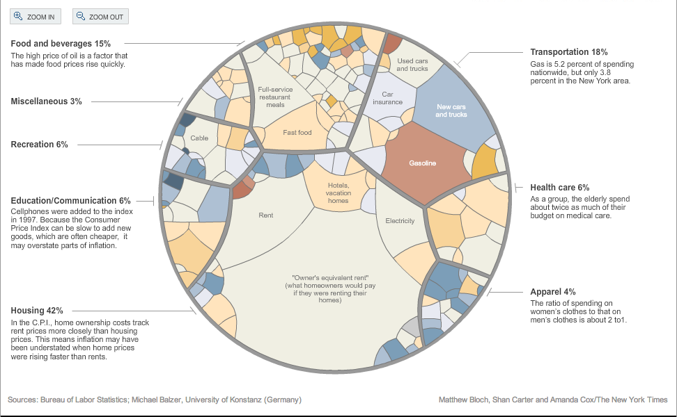


## Summary

* A standard for judging the device's responsibility to its owner is advisable.

* At the platform level, devices should give us options aligned with our own interests--rather than in the interests of increasing engagement metrics for media companies, and should present those options in a way that lets us choose well.

* This requires giving us informed, expressive, and social choices.

* Enabling informed choice may require that options listings be augmented with likely time costs, likely money costs, the unlikelihood of various hoped-for outcomes, the likelihood of unhoped-for outcomes, whether there are less-costly or better-success-rate options for similar outcomes, and even whether our hopes themselves are likely to change.

* Enable expressive choice means that options presented must relate to values and outcomes that are or that could be important to us.

* A public data service about people, choices, and outcomes could change search costs and behavior.

* These models of informed choice, expressive choice, and collective wisdom relate to microeconomics of addiction, behavioral economics, and current social issues like obesity, depression, a lack of meaningful work, sexual dysfunction, clickhole media / the buzzfeedification of media, and "internet addiction".


## Recommended Reading

## Acknowledgements

Thanks to [Tom Chi](http://tomchi.com) and [Glen Chiacchieri](http://glench.com) for direct feedback on drafts of this paper.

Thanks to [Tristan Harris](http://twitter.com/tristanharris), [Bret Victor](http://worrydream.org), [Jonathan Harris](http://number27.org), [Aza Raskin](http://azarask.in), and [Dan Mosedale](http://github.com/dmose) for motivating and clarifying discussions.


<div class="ack">


</div>


</textarea>
<link rel="stylesheet" href="/i.css">
<script src="/marked.min.js"></script>
<script type="text/javascript">
  var v = '<meta name="viewport" content="width=device-width, initial-scale=1.0">';
 document.getElementsByTagName('head')[0].insertAdjacentHTML('afterbegin', v);
  var text = document.getElementsByTagName('textarea')[0].value;
  var body = document.createElement('div');
  body.className = 'container';
  body.innerHTML = marked(text, { smartypants: true });
  document.body.appendChild(body);

  var header_h1_text = document.querySelector('header h1').innerText;
  document.title = header_h1_text;

  var zs = document.querySelectorAll('p img');
  for (var i = 0; i < zs.length; i++) {
    zs[i].onclick = function () { this.classList.toggle('zoomed'); }
  }
</script>
